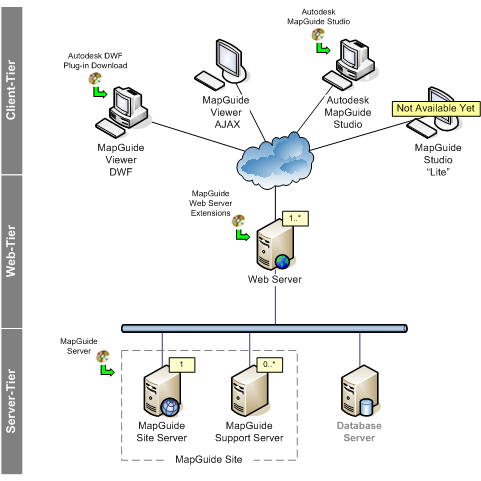

MapGuide Open Source - Architecture
Deployment overview
This page provides a brief overview of MapGuide Open Source components and basic deployment information. The figure below shows a typical deployment.

This deployment includes the following MapGuide Open Source components:
- MapGuide Server
- The MapGuide Server hosts the MapGuide Open Source services and responds to requests from client applications through TCP/IP protocol. The server provides six services : Site, Resource, Drawing, Feature, Mapping, and Rendering. If you are using a single server, that server performs all of these services. If you have more than one server, the site server always runs the first four services which handle data access and manage the resources for the site. To gain scalability, you can split off the Mapping and Rendering services and allocate them to your other servers. The MapGuide Server runs on either Microsoft Windows or Linux.
- MapGuide Web Server Extensions
- The MapGuide Web Server Extensions are internal components that have no UI but are accessed through the Web Extensions API. The Web Extensions include a MapAgent CGI/Fast-CGI module that exposes the services offered by the MapServer Enterprise Server to client applications over the Internet or an intranet using HTTP protocol. The Web Extensions API supports three languages/environments: ASP, JSP, and PHP. The MapGuide Web Server Extensions run on either Microsoft Windows or Linux and work with either the Apache Web Server or Microsoft IIS.
- Autodesk DWF Viewer
- The Autodesk DWF Viewer is a downloadable viewer based on a Microsoft ActiveX Control with full support for the Autodesk DWF format. This viewer works in Microsoft Internet Explorer only.
- MapGuide AJAX Viewer
- The MapGuide AJAX Viewer is a pure DHTML viewer based on AJAX technology that does not require any downloadable plug-ins. This viewer works with both Microsoft Internet Explorer and Mozilla Firefox.
- Autodesk MapGuide Studio
- MapGuide Studio is an authoring environment that handles all aspects of collecting and preparing geospatial data for distribution on the Internet (except custom coding). Note that MapGuide Studio is not an open source project, as it includes a number of proprietary components we cannot open source. We are planning a project that will provide a lightweight version of MapGuide Studio that will provide an easier means to create MapGuide Open Source websites and be a full open source project. MapGuide Studio runs only on Microsoft Windows.
There are two additional components that are not shown in this diagram:
- FDO (feature data objects)
- The Autodesk Feature Data Objects (FDO) application programming interface (API) is a set of commands for manipulating, defining, and analyzing geospatial information. MapGuide Open Source uses FDO to access data in a variety of geospatial data sources. A provider is a specific implementation of the FDO API. It is the software component that provides access to data in a particular DataStore.
- MapGuide Site Administrator
- The MapGuide Site Administrator is an application for managing your site and its servers. This application uses a web-based interface that you can access from any web browser. To start the program, open a browser and enter: http://servername/MapServer/MapAdmin/Login.php, using the name of the site server that you specified during installation. You use the MapGuide Site Administrator to add and remove servers, take servers offline for maintenance, modify the configuration of a server, assign services to the servers, and monitor the status of any server. The MapGuide Site Administrator is not a separate product component, but it is installed as a part of the MapGuide Web Server Extensions.
MapGuide Server
The functionality of the MapGuide Server is broken down into a collection of services each of which adheres to the principles of service-oriented archtecture. The core features of the server include:
- Runs as a Daemon on Linux or as a Service on Microsoft Windows.
- Servers can be grouped together into a "Site" to increase scalability.
- Provides connection oriented, role based security.
- Provides configurable logging of client access, administrative access, authentication attempts, errors, session lifetimes, and request tracing.
Resource Service
- Provides hierarchical storage of XML documents called resources. Resource documents define content such as:
- Feature Source - Defines a connection to a database or data file.
- Drawing Source - Defines a connection to a drawing (DWF) file.
- Layer Definition - Defines a map layer which is comprised of a reference to a data source and rules for stylizing that data by scale range.
- Map Definition - Defines a map in terms of a collection of layers, coordinate system, extent, and default background color.
- Web Layout - Defines the commands available to the user and the general layout of the viewer UI.
- The ability to trace references between resource documents.
- Access based security model with inheritable permissions.
- Provides storage for meta-data and binary data associated with each resource document.
- Provides storage for permanent library based resources and transient session based resources.
Feature Service
Drawing Service
Mapping Service
Rendering Service
Tile Service
MapGuide Web Server Extensions
Map Agent
MapGuide Web API
MapGuide Viewer
AJAX Viewer
DWF Viewer
MapGuide Site Administrator